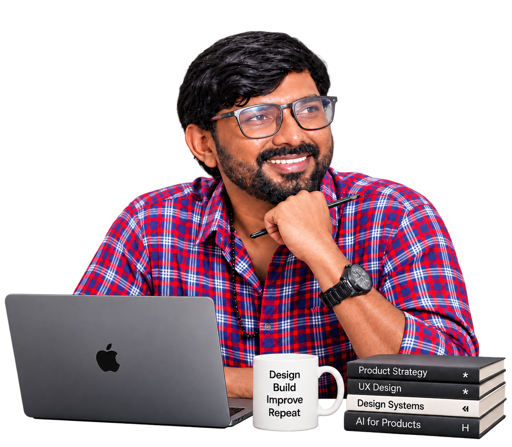
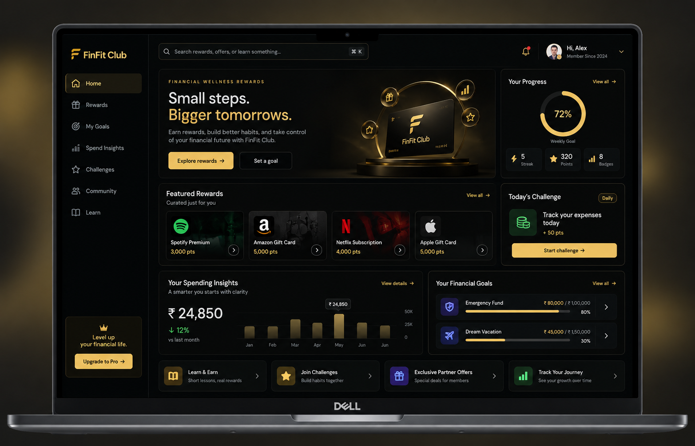
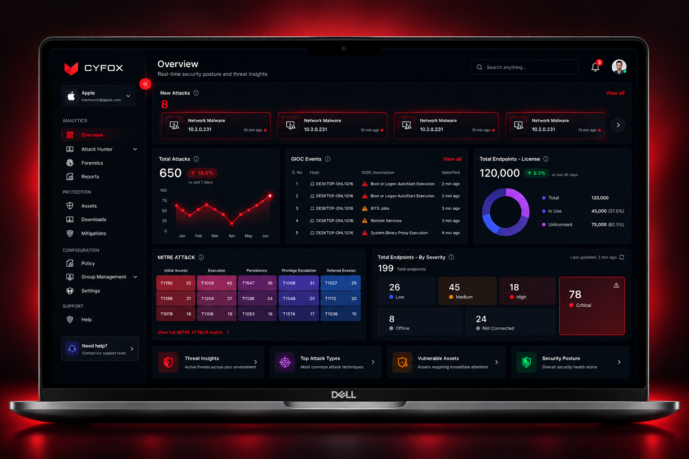
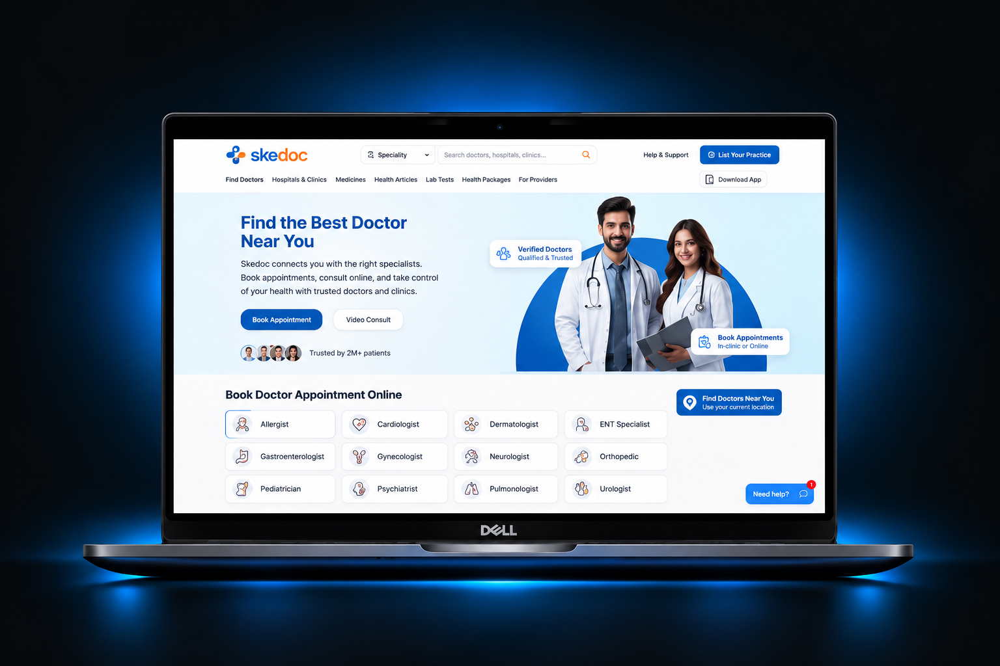
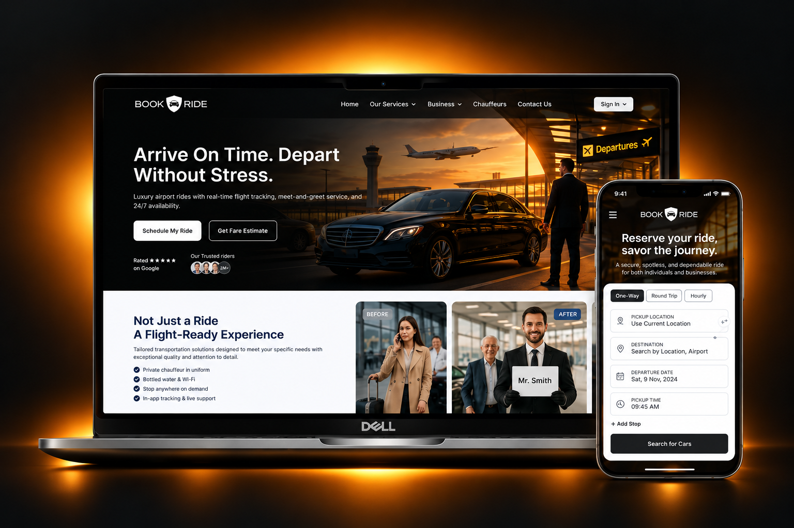
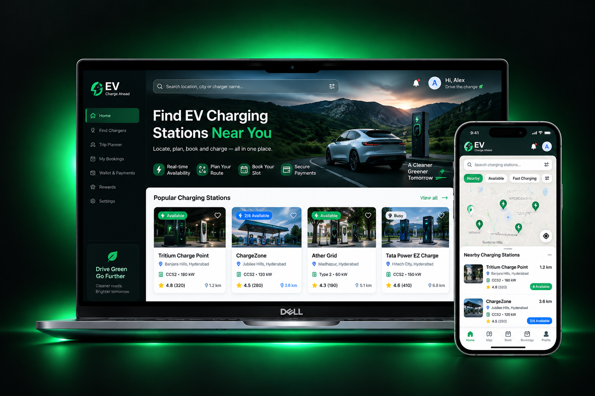
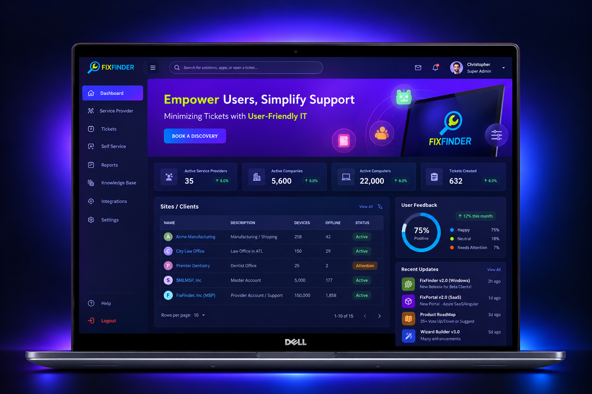

Enquire
Making enterprise knowledge easier to understand.
LAXMINARAYANA AVULA
Enterprise AI · SaaS · FinTech · Healthcare · Cybersecurity
13 years of software experience, including 9+ years in Product Design, UX Strategy, and Enterprise Design Systems. I partner with founders and product teams to turn complex problems into simple, human-centered experiences.

A selection of products across AI, enterprise SaaS, healthcare, fintech and cybersecurity — from product definition and UX strategy through interaction design and delivery.
Making enterprise knowledge easier to understand.
Designing a clearer financial engagement experience.

Making complex security workflows easier to operate.

Designing a clearer healthcare discovery and appointment experience.

Simplifying multi-service travel and chauffeur booking across web and mobile.

Designing a clearer EV charging journey from station discovery to route planning, booking, payment, and trip management.

Designing a scalable self-service IT support platform across workflows, dashboards, configuration, and operational experiences.

I’m a Senior Product Designer who turns complex product problems into clear, usable experiences—from the first question to the details that reach production.
My background in implementation helps me design with engineering realities in mind—not just how a screen looks, but how the product should behave.
13 years in software · 9+ years in Product Design
Enterprise UX · AI products · SaaS · Design Systems
Three recurring challenges shape my work.
Structure dense information, dashboards and workflows so people can see what matters and what to do next.
Design predictable journeys and AI interactions that help people act with confidence.
Build reusable patterns and clear handoffs that keep the product coherent as it grows.
Understand→Structure→Explore→Validate→Deliver
Different products demand different decisions. I make complexity clearer, preserve context, and design for the reality of the product—from the first question through delivery.
I use each stage to reduce ambiguity, expose trade-offs and make the next product decision clearer.
What is actually happening?
Business context · User needs · Existing behaviour · Technical reality
What needs to become clear?
Information architecture · Journeys · Content · States · Priorities
What could the experience become?
Concepts · Interaction models · Prototypes · Alternatives
What evidence changes the decision?
Research · Usability · Feedback · Technical feasibility
How does the solution scale?
Patterns · Components · Tokens · States · Accessibility
Can the idea survive implementation?
Specs · Responsive behaviour · Engineering · Design QA
Needs, comprehension, friction, behaviour and the outcome people are trying to achieve.
Business value, product strategy, priority, consistency and the experience at scale.
Technology, data, constraints, engineering effort and what can actually reach production.
Different products demand different decisions. The underlying standard stays the same: make complexity clearer, preserve context and design for the reality of the product.
Shaped search around answers, evidence and conversation instead of treating results as the end of the journey.
Designed clearer hierarchy, repeatable interaction patterns and implementation-ready enterprise experiences.
Worked across journeys and reusable interaction patterns to bring structure and consistency to the broader product experience.
Make complexity understandable.
Solve the underlying need, not just the requested screen.
Design patterns that survive beyond one feature.
Carry the design decision into production.
I'm open to Senior Product Design opportunities, product collaborations, and conversations around complex digital products, AI, SaaS and enterprise UX.
Good products don't become simple by accident.
Someone has to make the complexity understandable.
That's the work I enjoy.